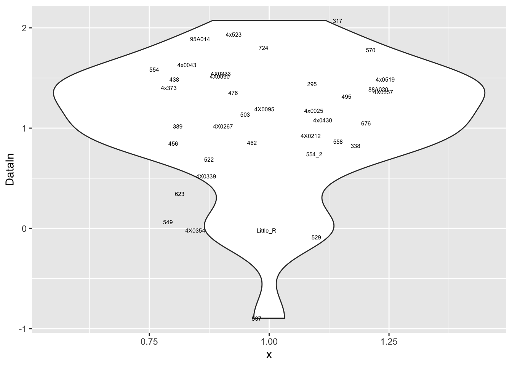
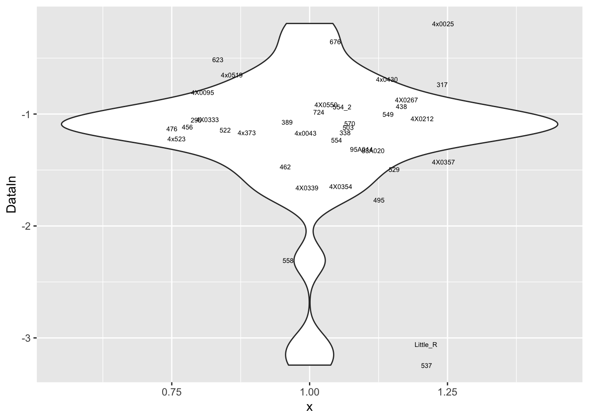

20190421_RegressOutRNASeqPC
Ben Fair
4/21/2019
Last updated: 2019-05-02
Checks: 6 0
Knit directory: Comparative_eQTL/analysis/
This reproducible R Markdown analysis was created with workflowr (version 1.2.0). The Report tab describes the reproducibility checks that were applied when the results were created. The Past versions tab lists the development history.
Great! Since the R Markdown file has been committed to the Git repository, you know the exact version of the code that produced these results.
Great job! The global environment was empty. Objects defined in the global environment can affect the analysis in your R Markdown file in unknown ways. For reproduciblity it’s best to always run the code in an empty environment.
The command set.seed(20190319) was run prior to running the code in the R Markdown file. Setting a seed ensures that any results that rely on randomness, e.g. subsampling or permutations, are reproducible.
Great job! Recording the operating system, R version, and package versions is critical for reproducibility.
Nice! There were no cached chunks for this analysis, so you can be confident that you successfully produced the results during this run.
Great! You are using Git for version control. Tracking code development and connecting the code version to the results is critical for reproducibility. The version displayed above was the version of the Git repository at the time these results were generated.
Note that you need to be careful to ensure that all relevant files for the analysis have been committed to Git prior to generating the results (you can use wflow_publish or wflow_git_commit). workflowr only checks the R Markdown file, but you know if there are other scripts or data files that it depends on. Below is the status of the Git repository when the results were generated:
Ignored files:
Ignored: .DS_Store
Ignored: .Rhistory
Ignored: .Rproj.user/
Ignored: analysis/.DS_Store
Ignored: analysis_temp/.DS_Store
Ignored: data/.DS_Store
Ignored: data/PastAnalysesDataToKeep/.DS_Store
Ignored: docs/.DS_Store
Untracked files:
Untracked: analysis/20190502_Check_eQTLs.Rmd
Untracked: analysis_temp/20190412_Check_eQTLs.Rmd
Untracked: data/PastAnalysesDataToKeep/20190428_log10TPM.txt.gz
Untracked: docs/assets/
Untracked: docs/figure/20190429_RNASeqSTAR_quantifications.Rmd/
Untracked: docs/figure/20190502_Check_eQTLs.Rmd/
Unstaged changes:
Deleted: analysis/20190412_Check_eQTLs.Rmd
Note that any generated files, e.g. HTML, png, CSS, etc., are not included in this status report because it is ok for generated content to have uncommitted changes.
These are the previous versions of the R Markdown and HTML files. If you’ve configured a remote Git repository (see ?wflow_git_remote), click on the hyperlinks in the table below to view them.
| File | Version | Author | Date | Message |
|---|---|---|---|---|
| Rmd | dee079a | Benjmain Fair | 2019-04-25 | Organized analysis and data |
| Rmd | f47ec35 | Benjmain Fair | 2019-04-25 | updated site |
| html | f47ec35 | Benjmain Fair | 2019-04-25 | updated site |
library(corrplot)
library(ggfortify)
library(readxl)
library(tidyverse)
library(psych)
library(ggrepel)
library(knitr)
library(reshape2)
library(gplots)
library(matrixStats)RNA-seq data for each individual was pseudo-mapped/quantified by kallisto and merged into a matrix of TPM values. Genes were filtered by some criteria (see link) to generate a table of phenotypes for association testing. Here I will assess if there is still an obvious batch affect (compared to my previous PCA analysis of the TPM count table) after I regress out the first (or first few PCs), since I will be included some of these PCs as covariates in the gene expression model.
# Read in count table, filtering out rows that are all zeros. Here the count-table is log transformed TPM values, with genes filtered just as they would be used for association testing
CountTable <- read.table(gzfile('../data/PastAnalysesDataToKeep/ForAssociationTesting.phenotypes.txt'), header=T, check.names=FALSE, row.names = 1)
kable(head(CountTable))| 295 | 317 | 338 | 389 | 438 | 456 | 462 | 476 | 495 | 4x0025 | 4x0043 | 4X0095 | 4X0212 | 4X0267 | 4X0333 | 4X0339 | 4X0354 | 4X0357 | 4x0430 | 4x0519 | 4X0550 | 4x373 | 4x523 | 503 | 522 | 529 | 537 | 549 | 554 | 554_2 | 558 | 570 | 623 | 676 | 724 | 88A020 | 95A014 | Little_R | |
|---|---|---|---|---|---|---|---|---|---|---|---|---|---|---|---|---|---|---|---|---|---|---|---|---|---|---|---|---|---|---|---|---|---|---|---|---|---|---|
| ENSPTRT00000080965.1 | -0.5513734 | -0.2319409 | -0.3714275 | -0.2293842 | -0.2919820 | -0.5319812 | -0.4041485 | -0.4501398 | 0.2158047 | 0.6260347 | -0.4391315 | -0.4937964 | -0.2494888 | -0.2264954 | 0.1223681 | -0.6938674 | 0.1409699 | 0.0916672 | 0.0029157 | -0.0038353 | -0.2298674 | 0.1747261 | 0.2190873 | -0.8346923 | -0.3647676 | 0.6106510 | 0.1053955 | 0.0129360 | -0.0639307 | 0.1289823 | 0.1163776 | 0.1578495 | -0.3695865 | -0.1090986 | 0.1366528 | -0.6287818 | -0.1732885 | -0.1616099 |
| ENSPTRT00000018164.6 | 2.2754389 | 2.3703465 | 1.9695374 | 2.2495018 | 1.9178839 | 1.7583578 | 2.1810320 | 2.3566092 | 1.3547960 | 2.3260770 | 2.1149547 | 2.3333568 | 2.2967431 | 2.4703343 | 2.2777523 | 0.7855623 | 0.7971378 | 1.6284265 | 2.2682804 | 2.7909994 | 2.6200565 | 1.9562169 | 2.1513633 | 2.5980121 | 1.9711977 | 0.9955122 | -0.2054019 | 1.9623893 | 2.0983639 | 2.1229248 | 0.4223026 | 2.2237139 | 2.4056289 | 1.5448119 | 2.6051829 | 2.2298348 | 2.3531736 | 0.7679346 |
| ENSPTRT00000035805.5 | 1.3432720 | 2.4229426 | 1.6078026 | 1.2802308 | 1.2494890 | 1.1620940 | 2.4286273 | 1.6570788 | 0.8498175 | 3.1629317 | 1.5950225 | 1.1084141 | 1.5639927 | 1.6094279 | 1.9190644 | -0.1917987 | 0.3655247 | 0.6789823 | 2.3933669 | 2.8951216 | 1.8714960 | 1.5946856 | 2.2466431 | 0.9846744 | 1.9114474 | 1.1238251 | 0.2178737 | 1.0662062 | 1.7802856 | 1.4300887 | 0.2772377 | 1.4347964 | 1.3889658 | 1.2945518 | 1.5695176 | 1.7592466 | 1.7533928 | -0.2615687 |
| ENSPTRT00000022320.6 | 1.3718810 | 1.2747034 | 1.1767917 | 1.0743333 | 0.9092581 | 1.2058840 | 1.7636154 | 1.3177987 | 1.3897160 | 2.0859516 | 0.8509284 | 1.5593460 | 1.2497384 | 1.7362168 | 1.3808269 | 0.8704771 | 1.0551792 | 1.3740041 | 1.3269158 | 1.5905079 | 0.7792469 | 1.7448775 | 0.9564418 | 0.6788403 | 1.7180394 | 0.4965543 | 0.0468931 | 1.3171747 | 1.5570387 | 1.1037093 | 0.6737095 | 3.1708698 | 1.1041569 | 2.3108608 | 1.8350600 | 1.5592324 | 1.4415895 | -0.4678476 |
| ENSPTRT00000100908.1 | 1.4421358 | 2.0734008 | 0.8252932 | 1.0169213 | 1.4859383 | 0.8487611 | 0.8566172 | 1.3527169 | 1.3148950 | 1.1739238 | 1.6326035 | 1.1883159 | 0.9224676 | 1.0194067 | 1.5432319 | 0.5191687 | -0.0180153 | 1.3612381 | 1.0813101 | 1.4847405 | 1.5176340 | 1.4019585 | 1.9364960 | 1.1383008 | 0.6865001 | -0.0887711 | -0.8953931 | 0.0650946 | 1.5840504 | 0.7397874 | 0.8659023 | 1.7809041 | 0.3450921 | 1.0487881 | 1.8017577 | 1.3872814 | 1.8891720 | -0.0173649 |
| ENSPTRT00000077951.1 | -1.0543007 | -0.7363178 | -1.1656307 | -1.0718136 | -0.9321051 | -1.1157300 | -1.4709289 | -1.1321205 | -1.7666708 | -0.1907550 | -1.1697292 | -0.8051094 | -1.0394673 | -0.8731307 | -1.0497993 | -1.6565767 | -1.6460708 | -1.4270497 | -0.6907740 | -0.6518344 | -0.9158408 | -1.1643035 | -1.2200819 | -1.1188476 | -1.1431537 | -1.4926465 | -3.2429892 | -1.0023308 | -1.2326055 | -0.9340805 | -2.3083708 | -1.0819587 | -0.5124136 | -0.3536809 | -0.9822676 | -1.3268375 | -1.3158769 | -3.0581078 |
# Read Covariates file
Covariates <- read.table('../data/PastAnalysesDataToKeep/3RS_10GT.covariates.txt', header=T, check.names = F, stringsAsFactors = F, row.names=1)
# Read admixture coefficients (K=4), and first 3 principle components, since some form of population substructure will likely be included in the expression modeling as a covariate.
AdmixtureCoeff <- read.table("../output/PopulationStructure/Admixture/MergedForAdmixture.4.Q.labelled") %>%
dplyr::rename(Individual.ID=V2) %>%
select(-V1, -V3, -V4, -V5, -V6) %>%
dplyr::rename(Admix.Western=V9, Admix.Eastern=V10, Admix.Central=V8, Admix.NigeriaCameroon=V7) #Renaming the admixture clusters after looking at plots with known subspecies
kable(head(AdmixtureCoeff))| Individual.ID | Admix.NigeriaCameroon | Admix.Central | Admix.Western | Admix.Eastern |
|---|---|---|---|---|
| 549 | 1.0e-05 | 0.000010 | 0.999970 | 1e-05 |
| 570 | 1.3e-05 | 0.059266 | 0.940711 | 1e-05 |
| 389 | 1.0e-05 | 0.000010 | 0.999970 | 1e-05 |
| 456 | 1.1e-05 | 0.000010 | 0.999969 | 1e-05 |
| 623 | 1.0e-05 | 0.000010 | 0.999970 | 1e-05 |
| 438 | 1.0e-05 | 0.000010 | 0.999970 | 1e-05 |
GenotypePCs <- read.table("../output/PopulationStructure/pca.eigenvec", header=T) %>%
select(IID, PC1, PC2, PC3) %>%
dplyr::rename(Individual.ID=IID, GenotypePC1=PC1, GenotypePC2=PC2, GenotypePC3=PC3)
kable(head(GenotypePCs))| Individual.ID | GenotypePC1 | GenotypePC2 | GenotypePC3 |
|---|---|---|---|
| 549 | -0.1085980 | -0.0184943 | 0.0047314 |
| 570 | -0.0945827 | -0.0228220 | -0.0140236 |
| 389 | -0.1101630 | -0.0206061 | 0.0032451 |
| 456 | -0.1080570 | -0.0178108 | 0.0044597 |
| 623 | -0.1098320 | -0.0206678 | 0.0041903 |
| 438 | -0.1081420 | -0.0177823 | 0.0045724 |
# Read in other metadata
OtherMetadata <- as.data.frame(read_excel("../data/Metadata.xlsx"))
kable(head(OtherMetadata))| Individual.ID | Source | Individual.Name | Yerkes.ID | Label | Notes | FileID.(Library_Species_CellType_FlowCell) | SX | RNA.Library.prep.batch | RNA.Sequencing.Lane | Sequencing.Barcode | RNA.Extract_date | DNASeq_FastqIdentifier | DNA.library.prep.batch | DNA.Sequencing.Lane | DNA.Sequencin.Barcode | DNA.Extract_date | Age | X__1 | Post.mortem.time.interval | RIN | Viral.status | RNA.total.reads.mapped.to.genome | RNA.total.reads.mapping.to.ortho.exons | Subspecies | DOB | DOD | DOB Estimated | Age (DOD-DOB) | OldLibInfo. RIN,RNA-extractdate,RNAbatch |
|---|---|---|---|---|---|---|---|---|---|---|---|---|---|---|---|---|---|---|---|---|---|---|---|---|---|---|---|---|---|
| 295 | Yerkes | Duncan | 295 | 295 | NA | 24_CM_3_L006.bam | M | 5 | 6 | 18 | 2018-10-10 | YG3 | 1 | 1 | NA | 2018-09-01 | 40 | NA | 0.5 | 7.3 | NA | 45.67002 | 17.51562 | verus/ellioti | 24731 | 39386 | NA | 40 | 6.3,6/14/2016,2 |
| 317 | Yerkes | Iyk | 317 | 317 | NA | 11_CM_3_L004.bam | M | 3 | 4 | 4 | 2016-06-07 | YG2 | 1 | 1 | NA | 2018-09-01 | 44 | NA | 2.5 | 7.6 | NA | 42.75617 | 17.18811 | verus | 22859 | 38832 | NA | 43 | NA |
| 338 | Yerkes | Maxine | 338 | 338 | NA | 8_CF_3_L008.bam | F | 3 | 8 | 6 | 2016-06-07 | YG1 | 1 | 1 | NA | 2018-09-01 | 53 | NA | NA | 7.2 | NA | 50.52632 | 19.49295 | verus | 20821 | 40179 | Yes | 53 | NA |
| 389 | Yerkes | Rogger | 389 | 389 | NA | NA | M | 4 | NA | 23 | 2018-10-10 | YG39 | 2 | 2 | NA | 2018-10-01 | 45 | NA | NA | 5.7 | NA | NA | NA | verus | 25204 | 41656 | NA | 45 | NA |
| 438 | Yerkes | Cheeta | 438 | 438 | NA | 155_CF_3_L004.bam | F | 2 | 4 | 8 | 2016-06-22 | YG22 | 1 | 1 | NA | 2018-09-01 | 55 | NA | NA | 5.6 | NA | 55.30614 | 18.06375 | verus | 20821 | 40909 | Yes | 55 | NA |
| 456 | Yerkes | Mai | 456 | 456 | NA | 156_CF_3_L001.bam | F | 2 | 1 | 15 | 2016-06-22 | YG23 | 1 | 1 | NA | 2018-09-01 | 49 | NA | NA | 5.5 | NA | 54.00665 | 20.13760 | verus | 23377 | 41275 | Yes | 49 | NA |
#Merge all metadata tables
Metadata <- OtherMetadata %>%
left_join(GenotypePCs, by=c("Individual.ID")) %>%
left_join(AdmixtureCoeff, by=c("Individual.ID"))
kable(head(Metadata))| Individual.ID | Source | Individual.Name | Yerkes.ID | Label | Notes | FileID.(Library_Species_CellType_FlowCell) | SX | RNA.Library.prep.batch | RNA.Sequencing.Lane | Sequencing.Barcode | RNA.Extract_date | DNASeq_FastqIdentifier | DNA.library.prep.batch | DNA.Sequencing.Lane | DNA.Sequencin.Barcode | DNA.Extract_date | Age | X__1 | Post.mortem.time.interval | RIN | Viral.status | RNA.total.reads.mapped.to.genome | RNA.total.reads.mapping.to.ortho.exons | Subspecies | DOB | DOD | DOB Estimated | Age (DOD-DOB) | OldLibInfo. RIN,RNA-extractdate,RNAbatch | GenotypePC1 | GenotypePC2 | GenotypePC3 | Admix.NigeriaCameroon | Admix.Central | Admix.Western | Admix.Eastern |
|---|---|---|---|---|---|---|---|---|---|---|---|---|---|---|---|---|---|---|---|---|---|---|---|---|---|---|---|---|---|---|---|---|---|---|---|---|
| 295 | Yerkes | Duncan | 295 | 295 | NA | 24_CM_3_L006.bam | M | 5 | 6 | 18 | 2018-10-10 | YG3 | 1 | 1 | NA | 2018-09-01 | 40 | NA | 0.5 | 7.3 | NA | 45.67002 | 17.51562 | verus/ellioti | 24731 | 39386 | NA | 40 | 6.3,6/14/2016,2 | -0.0819553 | 0.0484042 | 0.0151794 | 0.184097 | 1e-05 | 0.815883 | 1e-05 |
| 317 | Yerkes | Iyk | 317 | 317 | NA | 11_CM_3_L004.bam | M | 3 | 4 | 4 | 2016-06-07 | YG2 | 1 | 1 | NA | 2018-09-01 | 44 | NA | 2.5 | 7.6 | NA | 42.75617 | 17.18811 | verus | 22859 | 38832 | NA | 43 | NA | -0.1089490 | -0.0190248 | 0.0051753 | 0.000011 | 1e-05 | 0.999969 | 1e-05 |
| 338 | Yerkes | Maxine | 338 | 338 | NA | 8_CF_3_L008.bam | F | 3 | 8 | 6 | 2016-06-07 | YG1 | 1 | 1 | NA | 2018-09-01 | 53 | NA | NA | 7.2 | NA | 50.52632 | 19.49295 | verus | 20821 | 40179 | Yes | 53 | NA | -0.1081500 | -0.0179254 | 0.0048894 | 0.000010 | 1e-05 | 0.999970 | 1e-05 |
| 389 | Yerkes | Rogger | 389 | 389 | NA | NA | M | 4 | NA | 23 | 2018-10-10 | YG39 | 2 | 2 | NA | 2018-10-01 | 45 | NA | NA | 5.7 | NA | NA | NA | verus | 25204 | 41656 | NA | 45 | NA | -0.1101630 | -0.0206061 | 0.0032451 | 0.000010 | 1e-05 | 0.999970 | 1e-05 |
| 438 | Yerkes | Cheeta | 438 | 438 | NA | 155_CF_3_L004.bam | F | 2 | 4 | 8 | 2016-06-22 | YG22 | 1 | 1 | NA | 2018-09-01 | 55 | NA | NA | 5.6 | NA | 55.30614 | 18.06375 | verus | 20821 | 40909 | Yes | 55 | NA | -0.1081420 | -0.0177823 | 0.0045724 | 0.000010 | 1e-05 | 0.999970 | 1e-05 |
| 456 | Yerkes | Mai | 456 | 456 | NA | 156_CF_3_L001.bam | F | 2 | 1 | 15 | 2016-06-22 | YG23 | 1 | 1 | NA | 2018-09-01 | 49 | NA | NA | 5.5 | NA | 54.00665 | 20.13760 | verus | 23377 | 41275 | Yes | 49 | NA | -0.1080570 | -0.0178108 | 0.0044597 | 0.000011 | 1e-05 | 0.999969 | 1e-05 |
Check some of the gene expression phenotype distributions
#function to plot datapoints as violin plot with individual points labelled. I find this slightly more useful than histograms for plotting phenotype because I can see the distribution and also label points
MyPlot <- function(DataIn){
ggplot(mapping=aes(x=1, y=DataIn, label=names(DataIn))) +
geom_violin() +
geom_text(position=position_jitter(width=0.25), alpha=1, size=2)
}
#Plot expression phenotypes for a few genes
MyPlot(unlist(CountTable[1,]))
| Version | Author | Date |
|---|---|---|
| f47ec35 | Benjmain Fair | 2019-04-25 |
MyPlot(unlist(CountTable[2,]))
| Version | Author | Date |
|---|---|---|
| f47ec35 | Benjmain Fair | 2019-04-25 |
MyPlot(unlist(CountTable[3,]))
| Version | Author | Date |
|---|---|---|
| f47ec35 | Benjmain Fair | 2019-04-25 |
MyPlot(unlist(CountTable[4,]))
| Version | Author | Date |
|---|---|---|
| f47ec35 | Benjmain Fair | 2019-04-25 |
MyPlot(unlist(CountTable[5,]))
| Version | Author | Date |
|---|---|---|
| f47ec35 | Benjmain Fair | 2019-04-25 |
MyPlot(unlist(CountTable[6,]))
| Version | Author | Date |
|---|---|---|
| f47ec35 | Benjmain Fair | 2019-04-25 |
MyPlot(unlist(CountTable[7,]))
| Version | Author | Date |
|---|---|---|
| f47ec35 | Benjmain Fair | 2019-04-25 |
MyPlot(unlist(CountTable[8,]))
| Version | Author | Date |
|---|---|---|
| f47ec35 | Benjmain Fair | 2019-04-25 |
MyPlot(unlist(CountTable[9,]))
| Version | Author | Date |
|---|---|---|
| f47ec35 | Benjmain Fair | 2019-04-25 |
MyPlot(unlist(CountTable[10,]))
| Version | Author | Date |
|---|---|---|
| f47ec35 | Benjmain Fair | 2019-04-25 |
#What is distribution of expression levels for all genes in the table
# Histogram of rowMeans. (Arithmetic mean of the log-transformed data)
hist(rowMeans(CountTable))
| Version | Author | Date |
|---|---|---|
| f47ec35 | Benjmain Fair | 2019-04-25 |
Plot correlation matrix… Should closely resemble the correlation matrix in this previous analysis, except that the previous correlation matrix included the top5000 expressed genes, while this one includes the top5000 genes of the genes that are included in the phenotype table for association testing.
CorMatrix <- CountTable %>%
mutate(sumVar = rowSums(.)) %>%
arrange(desc(sumVar)) %>%
head(5000) %>%
select(-sumVar) %>%
scale() %>%
cor(method = c("spearman"))
RNAExtractionDate <- as.character(unclass(factor(plyr::mapvalues(row.names(CorMatrix), from=Metadata$Individual.ID, to=Metadata$RNA.Extract_date))))The following `from` values were not present in `x`: MD_AndRNA.Library.prep.batch <- as.character(unclass(factor(plyr::mapvalues(row.names(CorMatrix), from=Metadata$Individual.ID, to=Metadata$RNA.Library.prep.batch))))The following `from` values were not present in `x`: MD_And# Heatmap of correlation. Row colors for RNA extraction batch, column colors for RNA library prep batch
heatmap.2(CorMatrix, trace="none", ColSideColors=RNAExtractionDate, RowSideColors = RNA.Library.prep.batch)
| Version | Author | Date |
|---|---|---|
| f47ec35 | Benjmain Fair | 2019-04-25 |
# What is mean correlation
mean(CorMatrix)[1] 0.8059961Now regress out the first RNA-seq PC and recheck correlation matrix
# Regress out PC1
GetResiduals <- function(Y, X){
df <- data.frame(c(Y),X)
mylm <- lm(Y ~ ., data=df)
return(mylm$residuals)
}
ResidualCountTable <- t(apply(CountTable,1,GetResiduals, t(Covariates[c("PC1.RS"),])))
CorMatrix <- ResidualCountTable %>% as.data.frame() %>%
mutate(sumVar = rowSums(.)) %>%
arrange(desc(sumVar)) %>%
head(5000) %>%
select(-sumVar) %>%
scale() %>%
cor(method = c("spearman"))
RNAExtractionDate <- as.character(unclass(factor(plyr::mapvalues(row.names(CorMatrix), from=Metadata$Individual.ID, to=Metadata$RNA.Extract_date))))The following `from` values were not present in `x`: MD_AndRNA.Library.prep.batch <- as.character(unclass(factor(plyr::mapvalues(row.names(CorMatrix), from=Metadata$Individual.ID, to=Metadata$RNA.Library.prep.batch))))The following `from` values were not present in `x`: MD_And# Heatmap of correlation. Row colors for RNA extraction batch, column colors for RNA library prep batch
heatmap.2(CorMatrix, trace="none", ColSideColors=RNAExtractionDate, RowSideColors = RNA.Library.prep.batch)
| Version | Author | Date |
|---|---|---|
| f47ec35 | Benjmain Fair | 2019-04-25 |
# What is mean correlation
mean(CorMatrix)[1] 0.2167298Interpretation: The regressing first PC1 seems to take away the obvious batch effect that was present in the lower left of the original correlation matrix (The samples that were in that batch no longer cluster together in the lower left), however, regressing out first PC alone still leaves 2 clear clusters of samples.
In my first pass at eQTL mapping I including 3 PCs, let’s see how the correlation matrix clusters after regressing out all of these PCs. (Not iteratively regressing out, but all at once; take residuals from this model Y~PC1+PC2+PC3)
# Regress out PC1, PC2, and PC3
ResidualCountTable <- t(apply(CountTable,1,GetResiduals, t(Covariates[c("PC1.RS", "PC2.RS", "PC3.RS"),])))
CorMatrix <- ResidualCountTable %>% as.data.frame() %>%
mutate(sumVar = rowSums(.)) %>%
arrange(desc(sumVar)) %>%
head(5000) %>%
select(-sumVar) %>%
scale() %>%
cor(method = c("spearman"))
RNAExtractionDate <- as.character(unclass(factor(plyr::mapvalues(row.names(CorMatrix), from=Metadata$Individual.ID, to=Metadata$RNA.Extract_date))))The following `from` values were not present in `x`: MD_AndRNA.Library.prep.batch <- as.character(unclass(factor(plyr::mapvalues(row.names(CorMatrix), from=Metadata$Individual.ID, to=Metadata$RNA.Library.prep.batch))))The following `from` values were not present in `x`: MD_And# Heatmap of correlation. Row colors for RNA extraction batch, column colors for RNA library prep batch
heatmap.2(CorMatrix, trace="none", ColSideColors=RNAExtractionDate, RowSideColors = RNA.Library.prep.batch)
| Version | Author | Date |
|---|---|---|
| f47ec35 | Benjmain Fair | 2019-04-25 |
# What is mean correlation
mean(CorMatrix)[1] 0.1172888Clearly there is still residual structure in the data even after regressing out the top 3 PCs. Now I want to figure out if this residual structure is caused by any technical factors that I could justifiably adjust for (eg RIN score) or if it is genetic. I will now perform PCA on the residuals and see if they correlate to any of the observed technical factors or genetic population substructure that I previously looked at before regressing out PCs.
#First get a list of the same genes that were used in the original PCA analysis (top 2500 expressed genes)
GenesForPCA <- CountTable %>%
rownames_to_column('gene') %>%
mutate(sumVar = rowSums(select(.,-gene))) %>%
arrange(desc(sumVar)) %>%
head(2500) %>%
pull(gene)
pca_results <- ResidualCountTable %>% as.data.frame() %>%
rownames_to_column('gene') %>%
filter(gene %in% GenesForPCA) %>%
column_to_rownames('gene') %>%
mutate(Variance = rowVars(as.matrix(.))) %>%
filter(Variance>0) %>%
select(-Variance) %>%
t() %>%
prcomp(center=T, scale. = T)
summary(pca_results)Importance of components:
PC1 PC2 PC3 PC4 PC5 PC6
Standard deviation 42.6985 8.70349 7.77771 7.20705 6.58620 6.20179
Proportion of Variance 0.7322 0.03042 0.02429 0.02086 0.01742 0.01545
Cumulative Proportion 0.7322 0.76262 0.78691 0.80777 0.82519 0.84064
PC7 PC8 PC9 PC10 PC11 PC12
Standard deviation 5.38525 5.23972 5.02747 4.90940 4.7344 4.44945
Proportion of Variance 0.01165 0.01103 0.01015 0.00968 0.0090 0.00795
Cumulative Proportion 0.85228 0.86331 0.87346 0.88314 0.8921 0.90009
PC13 PC14 PC15 PC16 PC17 PC18
Standard deviation 4.25279 4.06900 4.0245 3.97194 3.82780 3.73073
Proportion of Variance 0.00726 0.00665 0.0065 0.00634 0.00588 0.00559
Cumulative Proportion 0.90736 0.91401 0.9205 0.92685 0.93273 0.93832
PC19 PC20 PC21 PC22 PC23 PC24
Standard deviation 3.70848 3.59657 3.57082 3.4581 3.40354 3.29980
Proportion of Variance 0.00552 0.00519 0.00512 0.0048 0.00465 0.00437
Cumulative Proportion 0.94384 0.94904 0.95416 0.9590 0.96362 0.96799
PC25 PC26 PC27 PC28 PC29 PC30
Standard deviation 3.23734 3.12198 3.02463 2.94894 2.85489 2.75365
Proportion of Variance 0.00421 0.00391 0.00367 0.00349 0.00327 0.00305
Cumulative Proportion 0.97220 0.97611 0.97979 0.98328 0.98655 0.98960
PC31 PC32 PC33 PC34 PC35 PC36
Standard deviation 2.67728 2.57653 2.50205 2.41617 2.01e-14 7.464e-15
Proportion of Variance 0.00288 0.00267 0.00251 0.00234 0.00e+00 0.000e+00
Cumulative Proportion 0.99248 0.99514 0.99766 1.00000 1.00e+00 1.000e+00
PC37 PC38
Standard deviation 5.681e-15 5.184e-15
Proportion of Variance 0.000e+00 0.000e+00
Cumulative Proportion 1.000e+00 1.000e+00#Scree plot
screeplot(pca_results)
| Version | Author | Date |
|---|---|---|
| f47ec35 | Benjmain Fair | 2019-04-25 |
# Merge with metadata
Merged <- merge(pca_results$x, Metadata, by.x = "row.names", by.y = "Individual.ID", all=TRUE)
kable(head(Merged))| Row.names | PC1 | PC2 | PC3 | PC4 | PC5 | PC6 | PC7 | PC8 | PC9 | PC10 | PC11 | PC12 | PC13 | PC14 | PC15 | PC16 | PC17 | PC18 | PC19 | PC20 | PC21 | PC22 | PC23 | PC24 | PC25 | PC26 | PC27 | PC28 | PC29 | PC30 | PC31 | PC32 | PC33 | PC34 | PC35 | PC36 | PC37 | PC38 | Source | Individual.Name | Yerkes.ID | Label | Notes | FileID.(Library_Species_CellType_FlowCell) | SX | RNA.Library.prep.batch | RNA.Sequencing.Lane | Sequencing.Barcode | RNA.Extract_date | DNASeq_FastqIdentifier | DNA.library.prep.batch | DNA.Sequencing.Lane | DNA.Sequencin.Barcode | DNA.Extract_date | Age | X__1 | Post.mortem.time.interval | RIN | Viral.status | RNA.total.reads.mapped.to.genome | RNA.total.reads.mapping.to.ortho.exons | Subspecies | DOB | DOD | DOB Estimated | Age (DOD-DOB) | OldLibInfo. RIN,RNA-extractdate,RNAbatch | GenotypePC1 | GenotypePC2 | GenotypePC3 | Admix.NigeriaCameroon | Admix.Central | Admix.Western | Admix.Eastern |
|---|---|---|---|---|---|---|---|---|---|---|---|---|---|---|---|---|---|---|---|---|---|---|---|---|---|---|---|---|---|---|---|---|---|---|---|---|---|---|---|---|---|---|---|---|---|---|---|---|---|---|---|---|---|---|---|---|---|---|---|---|---|---|---|---|---|---|---|---|---|---|---|---|---|---|
| 295 | -50.430132 | -2.3098435 | 2.4369275 | -3.9747155 | 4.1379063 | -15.0889535 | 7.5684829 | -12.5989456 | 9.1740419 | -0.1703849 | -2.9391712 | 3.4073188 | -5.6781127 | -0.0438028 | -5.4085602 | 2.3785468 | 0.9952793 | 1.9026303 | 3.5125444 | -4.2340916 | -3.6697595 | -0.5426480 | -0.4313764 | -4.2924997 | 0.7051881 | 4.2004242 | 3.6811031 | -4.4906383 | -0.3435784 | -1.1822404 | -0.0878580 | 1.3669424 | 0.4949519 | -0.3753532 | 0 | 0 | 0 | 0 | Yerkes | Duncan | 295 | 295 | NA | 24_CM_3_L006.bam | M | 5 | 6 | 18 | 2018-10-10 | YG3 | 1 | 1 | NA | 2018-09-01 | 40 | NA | 0.5 | 7.3 | NA | 45.67002 | 17.51562 | verus/ellioti | 24731 | 39386 | NA | 40 | 6.3,6/14/2016,2 | -0.0819553 | 0.0484042 | 0.0151794 | 0.184097 | 1e-05 | 0.815883 | 1e-05 |
| 317 | 241.532847 | -0.0316741 | 0.5375320 | -0.7206688 | 0.9010903 | -2.1914714 | 1.0462675 | -1.7888688 | 1.3112178 | 0.1158945 | -0.4524644 | 0.5905292 | -0.7663165 | 0.0162050 | -0.7884457 | 0.4414294 | 0.0387473 | 0.1202932 | 0.3926779 | -0.4153662 | -0.4185246 | -0.1245901 | -0.1342599 | -0.7114382 | 0.1637270 | 0.6141035 | 0.5338902 | -0.6323517 | -0.0367285 | -0.1392326 | -0.0173996 | 0.1842514 | 0.0924651 | -0.0445170 | 0 | 0 | 0 | 0 | Yerkes | Iyk | 317 | 317 | NA | 11_CM_3_L004.bam | M | 3 | 4 | 4 | 2016-06-07 | YG2 | 1 | 1 | NA | 2018-09-01 | 44 | NA | 2.5 | 7.6 | NA | 42.75617 | 17.18811 | verus | 22859 | 38832 | NA | 43 | NA | -0.1089490 | -0.0190248 | 0.0051753 | 0.000011 | 1e-05 | 0.999969 | 1e-05 |
| 338 | -2.144211 | -0.0669376 | -1.5453948 | -0.3322771 | 0.9761652 | 0.1501650 | 0.4518967 | 0.2665345 | -0.8105410 | -3.2601071 | -2.0590783 | 7.3345467 | 5.5370030 | -15.0025373 | 2.5559130 | -6.5941064 | -2.0658545 | -10.7197849 | -0.2344986 | -4.7836382 | -2.8914650 | 3.5479971 | -3.6397800 | 0.5452169 | 0.2185825 | 0.5475979 | 0.2768962 | -0.2863866 | 0.4843528 | -0.6661467 | 0.1334733 | 1.5044987 | -0.4851243 | -0.0901153 | 0 | 0 | 0 | 0 | Yerkes | Maxine | 338 | 338 | NA | 8_CF_3_L008.bam | F | 3 | 8 | 6 | 2016-06-07 | YG1 | 1 | 1 | NA | 2018-09-01 | 53 | NA | NA | 7.2 | NA | 50.52632 | 19.49295 | verus | 20821 | 40179 | Yes | 53 | NA | -0.1081500 | -0.0179254 | 0.0048894 | 0.000010 | 1e-05 | 0.999970 | 1e-05 |
| 389 | -3.856348 | 1.0343383 | 1.7048629 | 0.8954923 | 1.4124154 | -1.1728185 | 1.0234824 | -1.5591497 | 0.7169038 | 0.3727142 | -0.6452253 | -0.1899591 | 0.3579922 | -0.5025431 | -1.3272068 | 1.4198048 | 1.3620939 | -1.1148167 | 0.2188360 | 1.5035396 | 0.2172473 | -0.7683361 | 0.5768306 | 1.1989056 | -2.0854489 | 1.5145974 | -4.7386290 | 3.7445017 | 4.1050593 | -9.4246426 | -7.3182332 | -5.0141238 | 4.6001930 | -2.7149222 | 0 | 0 | 0 | 0 | Yerkes | Rogger | 389 | 389 | NA | NA | M | 4 | NA | 23 | 2018-10-10 | YG39 | 2 | 2 | NA | 2018-10-01 | 45 | NA | NA | 5.7 | NA | NA | NA | verus | 25204 | 41656 | NA | 45 | NA | -0.1101630 | -0.0206061 | 0.0032451 | 0.000010 | 1e-05 | 0.999970 | 1e-05 |
| 438 | -6.885783 | -2.4661120 | 5.0472981 | 3.5276778 | 6.8895537 | 1.2619018 | 4.0897386 | -0.2801704 | 1.9099370 | -2.2141640 | 2.9491966 | -1.5915998 | -0.9030430 | -3.8399765 | 0.0239256 | 3.9599753 | -1.4000526 | 2.3733713 | 5.4107865 | -2.6253465 | 0.6682401 | -1.9667922 | -0.4806345 | 1.7904700 | 5.7293414 | 2.6928710 | -10.2441866 | 3.8032137 | -4.3911520 | 5.7353549 | 1.3669328 | -1.4147645 | 0.6556390 | -1.2714230 | 0 | 0 | 0 | 0 | Yerkes | Cheeta | 438 | 438 | NA | 155_CF_3_L004.bam | F | 2 | 4 | 8 | 2016-06-22 | YG22 | 1 | 1 | NA | 2018-09-01 | 55 | NA | NA | 5.6 | NA | 55.30614 | 18.06375 | verus | 20821 | 40909 | Yes | 55 | NA | -0.1081420 | -0.0177823 | 0.0045724 | 0.000010 | 1e-05 | 0.999970 | 1e-05 |
| 456 | 2.696852 | -0.0790156 | 0.9954681 | -0.3353002 | 2.2013716 | -0.9861758 | 0.9860697 | -1.4269147 | 0.7068544 | -0.9172136 | -0.0789697 | -1.1998594 | -0.2042522 | -0.0722823 | 0.6281202 | 1.4747030 | -0.0245971 | 0.6281378 | 1.9987541 | 1.8467420 | 0.4453291 | 0.9543101 | 0.9905206 | 0.9298047 | -3.7077392 | -1.9989876 | 3.4459438 | 7.9691675 | -8.3976329 | -7.3413986 | 6.3424025 | 3.0488619 | 0.4828621 | 1.5717938 | 0 | 0 | 0 | 0 | Yerkes | Mai | 456 | 456 | NA | 156_CF_3_L001.bam | F | 2 | 1 | 15 | 2016-06-22 | YG23 | 1 | 1 | NA | 2018-09-01 | 49 | NA | NA | 5.5 | NA | 54.00665 | 20.13760 | verus | 23377 | 41275 | Yes | 49 | NA | -0.1080570 | -0.0178108 | 0.0044597 | 0.000011 | 1e-05 | 0.999969 | 1e-05 |
PCs_to_test <- Merged[,2:11]
kable(head(PCs_to_test))| PC1 | PC2 | PC3 | PC4 | PC5 | PC6 | PC7 | PC8 | PC9 | PC10 |
|---|---|---|---|---|---|---|---|---|---|
| -50.430132 | -2.3098435 | 2.4369275 | -3.9747155 | 4.1379063 | -15.0889535 | 7.5684829 | -12.5989456 | 9.1740419 | -0.1703849 |
| 241.532847 | -0.0316741 | 0.5375320 | -0.7206688 | 0.9010903 | -2.1914714 | 1.0462675 | -1.7888688 | 1.3112178 | 0.1158945 |
| -2.144211 | -0.0669376 | -1.5453948 | -0.3322771 | 0.9761652 | 0.1501650 | 0.4518967 | 0.2665345 | -0.8105410 | -3.2601071 |
| -3.856348 | 1.0343383 | 1.7048629 | 0.8954923 | 1.4124154 | -1.1728185 | 1.0234824 | -1.5591497 | 0.7169038 | 0.3727142 |
| -6.885783 | -2.4661120 | 5.0472981 | 3.5276778 | 6.8895537 | 1.2619018 | 4.0897386 | -0.2801704 | 1.9099370 | -2.2141640 |
| 2.696852 | -0.0790156 | 0.9954681 | -0.3353002 | 2.2013716 | -0.9861758 | 0.9860697 | -1.4269147 | 0.7068544 | -0.9172136 |
# Grab potential continuous confounders that make sense to test
Continuous_confounders_to_test <- Merged[, c("RIN", "Age", "GenotypePC1", "GenotypePC2", "GenotypePC3", "Admix.Western", "Admix.Eastern", "Admix.Central", "Admix.NigeriaCameroon")]
kable(head(Continuous_confounders_to_test))| RIN | Age | GenotypePC1 | GenotypePC2 | GenotypePC3 | Admix.Western | Admix.Eastern | Admix.Central | Admix.NigeriaCameroon |
|---|---|---|---|---|---|---|---|---|
| 7.3 | 40 | -0.0819553 | 0.0484042 | 0.0151794 | 0.815883 | 1e-05 | 1e-05 | 0.184097 |
| 7.6 | 44 | -0.1089490 | -0.0190248 | 0.0051753 | 0.999969 | 1e-05 | 1e-05 | 0.000011 |
| 7.2 | 53 | -0.1081500 | -0.0179254 | 0.0048894 | 0.999970 | 1e-05 | 1e-05 | 0.000010 |
| 5.7 | 45 | -0.1101630 | -0.0206061 | 0.0032451 | 0.999970 | 1e-05 | 1e-05 | 0.000010 |
| 5.6 | 55 | -0.1081420 | -0.0177823 | 0.0045724 | 0.999970 | 1e-05 | 1e-05 | 0.000010 |
| 5.5 | 49 | -0.1080570 | -0.0178108 | 0.0044597 | 0.999969 | 1e-05 | 1e-05 | 0.000011 |
# Test
Spearman_test_results <- corr.test(Continuous_confounders_to_test, PCs_to_test, adjust="none", method="spearman")
MinP_floor <- floor(log10(min(Spearman_test_results$p)))
# Plot
Spearman_test_results$p %>%
melt() %>%
dplyr::rename(Pvalue = value, Principle.Component=Var2, Potential.Confounder=Var1) %>%
ggplot(aes(x=Potential.Confounder, y=Principle.Component, fill=Pvalue)) +
geom_tile() +
geom_text(aes(label = signif(Pvalue, 2))) +
scale_fill_gradient(limits=c(10**MinP_floor, 1), breaks=10**seq(MinP_floor,0,1), trans = 'log', high="white", low="red" ) +
theme_classic() +
theme(axis.text.x = element_text(angle = 45, hjust = 1))
| Version | Author | Date |
|---|---|---|
| f47ec35 | Benjmain Fair | 2019-04-25 |
# Grab potential categorical confounders that make sense to test
Categorical_confounders_to_test <- Merged[,c("Viral.status", "SX","RNA.Extract_date", "RNA.Library.prep.batch", "Source")]
kable(head(Categorical_confounders_to_test))| Viral.status | SX | RNA.Extract_date | RNA.Library.prep.batch | Source |
|---|---|---|---|---|
| NA | M | 2018-10-10 | 5 | Yerkes |
| NA | M | 2016-06-07 | 3 | Yerkes |
| NA | F | 2016-06-07 | 3 | Yerkes |
| NA | M | 2018-10-10 | 4 | Yerkes |
| NA | F | 2016-06-22 | 2 | Yerkes |
| NA | F | 2016-06-22 | 2 | Yerkes |
# Viral status will need to be reformatted to make factors that make sense for testing (example: HBV+, HBV- HCV+, HCV- are factors that make sense). Let's assume that NA means negative status.
Categorical_confounders_to_test$HBV_status <- grepl("HBV+", Categorical_confounders_to_test$Viral.status)
Categorical_confounders_to_test$HCV_status <- grepl("HCV+", Categorical_confounders_to_test$Viral.status)
Categorical_confounders_to_test <- Categorical_confounders_to_test[, -1 ]
kable(head(Categorical_confounders_to_test))| SX | RNA.Extract_date | RNA.Library.prep.batch | Source | HBV_status | HCV_status |
|---|---|---|---|---|---|
| M | 2018-10-10 | 5 | Yerkes | FALSE | FALSE |
| M | 2016-06-07 | 3 | Yerkes | FALSE | FALSE |
| F | 2016-06-07 | 3 | Yerkes | FALSE | FALSE |
| M | 2018-10-10 | 4 | Yerkes | FALSE | FALSE |
| F | 2016-06-22 | 2 | Yerkes | FALSE | FALSE |
| F | 2016-06-22 | 2 | Yerkes | FALSE | FALSE |
# Do one-way anova test as a loop.
# First initialize results matrix
Pvalues <- matrix(ncol = dim(PCs_to_test)[2], nrow = dim(Categorical_confounders_to_test)[2])
colnames(Pvalues) <- colnames(PCs_to_test)
rownames(Pvalues) <- colnames(Categorical_confounders_to_test)
for (confounder in seq_along(Categorical_confounders_to_test)) {
for (PC in seq_along(PCs_to_test)) {
res.aov <- aov(PCs_to_test[[PC]] ~ Categorical_confounders_to_test[[confounder]])
pval <- summary(res.aov)[[1]][["Pr(>F)"]][1]
Pvalues[confounder, PC] <- pval
}
}
# Plot
MinP_floor <- floor(log10(min(Pvalues)))
Pvalues %>%
melt() %>%
dplyr::rename(Pvalue = value, Principle.Component=Var2, Potential.Confounder=Var1) %>%
ggplot(aes(x=Potential.Confounder, y=Principle.Component, fill=Pvalue)) +
geom_tile() +
geom_text(aes(label = signif(Pvalue, 2))) +
scale_fill_gradient(limits=c(10**MinP_floor, 1), breaks=10**seq(MinP_floor,0,1), trans = 'log', high="white", low="red" ) +
theme_classic() +
theme(axis.text.x = element_text(angle = 45, hjust = 1))
| Version | Author | Date |
|---|---|---|
| f47ec35 | Benjmain Fair | 2019-04-25 |
Interpretation: The only observed technical factors (or measured population structure statistics) that correlate with any of the PCs on the residuals are Admix.Central and HBV status. Given that HBV status is correlated with such late PCs that explain so little variance (see scree plot above), and there are only 3 HBV+ observations, I think including HBV in the model is not justified. Also note that the correlation matrix of the residuals after regressing out 3PCs generally shows two clusters, neither of which segregate with the 3HBV+ observations. The other significant correlation is between PC9 (which explains little variance) and Admix.Central coefficient. This trait is already included implicitly in the eQTL calling model as a genotype PC covariate.
Lastly, I want to look at the residuals after regressing out those first three PCs.
#Plot residuals for a few genes
MyPlot(ResidualCountTable[1,])
| Version | Author | Date |
|---|---|---|
| f47ec35 | Benjmain Fair | 2019-04-25 |
MyPlot(ResidualCountTable[2,])
| Version | Author | Date |
|---|---|---|
| f47ec35 | Benjmain Fair | 2019-04-25 |
MyPlot(ResidualCountTable[3,])
| Version | Author | Date |
|---|---|---|
| f47ec35 | Benjmain Fair | 2019-04-25 |
MyPlot(ResidualCountTable[4,])
| Version | Author | Date |
|---|---|---|
| f47ec35 | Benjmain Fair | 2019-04-25 |
MyPlot(ResidualCountTable[5,])
| Version | Author | Date |
|---|---|---|
| f47ec35 | Benjmain Fair | 2019-04-25 |
MyPlot(ResidualCountTable[6,])
| Version | Author | Date |
|---|---|---|
| f47ec35 | Benjmain Fair | 2019-04-25 |
MyPlot(ResidualCountTable[7,])
| Version | Author | Date |
|---|---|---|
| f47ec35 | Benjmain Fair | 2019-04-25 |
MyPlot(ResidualCountTable[8,])
| Version | Author | Date |
|---|---|---|
| f47ec35 | Benjmain Fair | 2019-04-25 |
MyPlot(ResidualCountTable[9,])
| Version | Author | Date |
|---|---|---|
| f47ec35 | Benjmain Fair | 2019-04-25 |
MyPlot(ResidualCountTable[10,])
| Version | Author | Date |
|---|---|---|
| f47ec35 | Benjmain Fair | 2019-04-25 |
#Plot of first two PCs of residuals
pca_results$x %>%
as.data.frame() %>%
rownames_to_column('sample') %>%
ggplot(aes(x=PC1, y=PC2, label=sample)) +
geom_text()
| Version | Author | Date |
|---|---|---|
| f47ec35 | Benjmain Fair | 2019-04-25 |
Interpretation: After regressing out the PCs and looking at residuals, sample 317 seems to be consistently an outlier. This is also reflected in PC space of the residuals. It was not an outlier in the original phenotypes. Was it an outlier in the original PCs that were regressed out?
# The PCs were read in from the covariates file
t(Covariates) %>%
as.data.frame() %>%
rownames_to_column('sample') %>%
ggplot(aes(x=PC1.RS, y=PC2.RS, label=sample)) +
geom_text()
| Version | Author | Date |
|---|---|---|
| f47ec35 | Benjmain Fair | 2019-04-25 |
t(Covariates) %>%
as.data.frame() %>%
rownames_to_column('sample') %>%
ggplot(aes(x=PC2.RS, y=PC3.RS, label=sample)) +
geom_text()
| Version | Author | Date |
|---|---|---|
| f47ec35 | Benjmain Fair | 2019-04-25 |
sessionInfo()R version 3.5.1 (2018-07-02)
Platform: x86_64-apple-darwin15.6.0 (64-bit)
Running under: macOS 10.14
Matrix products: default
BLAS: /Library/Frameworks/R.framework/Versions/3.5/Resources/lib/libRblas.0.dylib
LAPACK: /Library/Frameworks/R.framework/Versions/3.5/Resources/lib/libRlapack.dylib
locale:
[1] en_US.UTF-8/en_US.UTF-8/en_US.UTF-8/C/en_US.UTF-8/en_US.UTF-8
attached base packages:
[1] stats graphics grDevices utils datasets methods base
other attached packages:
[1] matrixStats_0.54.0 gplots_3.0.1 reshape2_1.4.3
[4] knitr_1.22 ggrepel_0.8.0 psych_1.8.10
[7] forcats_0.4.0 stringr_1.4.0 dplyr_0.8.0.1
[10] purrr_0.3.2 readr_1.3.1 tidyr_0.8.2
[13] tibble_2.1.1 tidyverse_1.2.1 readxl_1.1.0
[16] ggfortify_0.4.5 ggplot2_3.1.0 corrplot_0.84
loaded via a namespace (and not attached):
[1] Rcpp_1.0.1 lubridate_1.7.4 lattice_0.20-38
[4] gtools_3.8.1 assertthat_0.2.1 rprojroot_1.3-2
[7] digest_0.6.18 R6_2.4.0 cellranger_1.1.0
[10] plyr_1.8.4 backports_1.1.3 evaluate_0.13
[13] highr_0.8 httr_1.4.0 pillar_1.3.1
[16] rlang_0.3.3 lazyeval_0.2.2 rstudioapi_0.10
[19] gdata_2.18.0 whisker_0.3-2 rmarkdown_1.11
[22] labeling_0.3 foreign_0.8-71 munsell_0.5.0
[25] broom_0.5.1 compiler_3.5.1 modelr_0.1.4
[28] xfun_0.6 pkgconfig_2.0.2 mnormt_1.5-5
[31] htmltools_0.3.6 tidyselect_0.2.5 gridExtra_2.3
[34] workflowr_1.2.0 crayon_1.3.4 withr_2.1.2
[37] bitops_1.0-6 grid_3.5.1 nlme_3.1-137
[40] jsonlite_1.6 gtable_0.3.0 git2r_0.24.0
[43] magrittr_1.5 scales_1.0.0 KernSmooth_2.23-15
[46] cli_1.1.0 stringi_1.4.3 fs_1.2.6
[49] xml2_1.2.0 generics_0.0.2 tools_3.5.1
[52] glue_1.3.1 hms_0.4.2 parallel_3.5.1
[55] yaml_2.2.0 colorspace_1.4-1 caTools_1.17.1.1
[58] rvest_0.3.2 haven_2.1.0